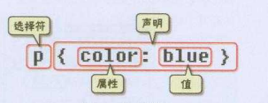
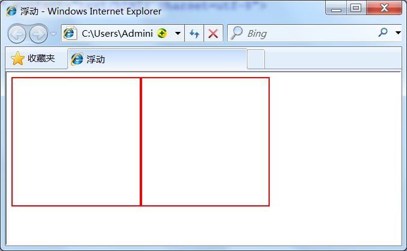

- HTML+CSS
- HTML常用标签（注意：标签与元素是一个概念）:
- 1.
<html>标签: - 2.
<head>标签: - 3.
<body>标签： - 4.
<title>标签: - 5.代码注释:
- 6.
<p>段落标签: - 7.文章等级标题标签
<h1>~<h6>： - 8.强调标签（
<em>或<strong>标签） - 9.短文本引用
<q>标签 - 10.长文本引用标签
<blockquote>: - 11.把文字设置成单独样式的标签
<span>: - 12.换行标签
<br/> - 13.空格标记
： - 14.添加水平横线
<hr/>： - 15.
<address>标签，为网页加入地址信息: - 16.代码标签
<code>(在网页上显示程序代码): - 17.多行代码
<pre>标签: - 18.无序列表标签
<ul><li> - 19.有序列表标签
<ol><li>: - 20.独立板块标签
<div>: - 21.
<table>标签: - 22.超链接标签
<a>: - 23.图片标签
<img/>: - 24.表单标签
<form>（与用户进行交互）: - 25.文本输入框,与密码输入框
<input>: - 26.文本输入域
<textarea>: - 27.单选框，多选框:
- 28.下拉列表框
<select><option>: - 29.提交按钮与重置按钮:
- 30.
label标签:
- 1.
- HTML_DEMO:
- CSS:
- HTML常用标签（注意：标签与元素是一个概念）:
HTML+CSS
-
HTML是网页内容的载体。内容就是网页制作者放在页面上想要让用户浏览的信息，可以包含文字、图片、视频等。
-
CSS样式是表现。就像网页的外衣。比如，标题字体、颜色变化，或为标题加入背景图片、边框等。所有这些用来改变内容外观的东西称之为表现。
-
JavaScript是用来实现网页上的特效效果。如：鼠标滑过弹出下拉菜单。或鼠标滑过表格的背景颜色改变。还有焦点新闻（新闻图片）的轮换。可以这么理解，有动画的，有交互的一般都是用JavaScript来实现的。
HTML常用标签（注意：标签与元素是一个概念）:
在 html 中是忽略回车和空格的，你输入的再多回车和空格也是显示不出来的。
-
标签由英文尖括号< >括起来，如就是一个标签。
-
html中的标签一般都是成对出现的，分开始标签和结束标签。结束标签比开始标签多了一个/。
如：
（1） <p></p> （2） <div></div> （3） <span></span>
-
标签与标签之间是可以嵌套的，但先后顺序必须保持一致。
-
HTML标签不区分大小写，
<h1>和<H1>是一样的，但建议小写，因为大部分程序员都以小写为准。
1.<html>标签:
<html></html>称为根标签，所有其他的网页标签都在<html></html>中。
2.<head>标签:
<head>标签用于定义文档的头部，它是所有头部元素的容器。头部元素有<title>、<script>、 <style>、<link>、<meta>等标签，
3.<body>标签：
在<body>和</body>标签之间的内容是网页的主要内容，如<h1>、<p>、<a>、<img>等网页内容标签，在这里的标签中的内容会在浏览器中显示出来。
一个网页的大致结构：
<html> <head>...</head> <body>...</body> </html>
4.<title>标签:
在<title>和</title>标签之间的文字内容是网页的标题信息，它会出现在浏览器的标题栏中。每个网页都应该有一个独一无二的title。
5.代码注释:
语法：
<!-- 注释文字 -->
6.<p>段落标签:
语法：
<p>段落文本</p>
注意一段文字一个<p>标签，如在一篇新闻文章中有3段文字，就要把这3个段落分别放到3个<p>标签中。这样使每一段之间会有一行空白，就像换行符‘\n’ 一样。
7.文章等级标题标签<h1>~<h6>：
语法：
<hx>标题文本</hx> (x为1-6)
标题标签一共有6个，h1、h2、h3、h4、h5、h6分别为一级标题、二级标题、三级标题、四级标题、五级标题、六级标题。并且依据重要性递减。<h1>是最高的等级。
<body> <h1>一级标题</h1> <h2>二级标题</h2> <h3>三级标题</h3> <h4>四级标题</h4> <h5>五级标题</h5> <h6>六级标题</h6> </body>
8.强调标签（<em>或<strong>标签）
语法：
<em>需要强调的文本</em>
<strong>需要强调的文本</strong>
<em> 表示强调，<strong>表示更强烈的强调。并且在浏览器中<em>默认用斜体表示，<strong>用粗体表示。
9.短文本引用 <q>标签
当你想引用其他人的名言，名句（注意：是短文本）时,使用它。
语法：
<q>引用文本</q>
当使用时，注意要引用的文本不用加双引号，浏览器会对q标签自动添加双引号.
10.长文本引用标签 <blockquote>:
语法:
<blockquote>引用文本</blockquote>
浏览器对<blockquote>标签的解析是缩进样式。
11.把文字设置成单独样式的标签 <span>:
语法：
<span>文本</span>
<span>标签是没有语义的，它的作用就是为了设置单独的样式用的。（例如将文字设置成蓝色）
<span style="color:blue">文本</span>
12.换行标签 <br/>
在你想要换行的文本后面，在需要加回车换行的地方加入<br/>，<br/>标签作用相当于word文档中的回车.
<br/>标签是一个空标签，没有HTML内容的标签就是空标签，空标签只需要写一个开始标签，这样的标签有<br/>、<hr/>和<img/>。
13.空格标记 ：
语法：
在html代码中按空格键是不起作用的。
14.添加水平横线<hr/>：
语法：
<hr/>
注意：
<hr />标签和<br />标签一样也是一个空标签，所以只有一个开始标签，没有结束标签。<hr />标签的在浏览器中的默认样式线条比较粗，颜色为灰色，可能有些人觉得这种样式不美观，没有关系，这些外在样式在我们以后学习了css样式表之后，都可以对其修改。
15.<address>标签，为网页加入地址信息:
语法：
<address>联系地址信息文本</address> （ 在浏览器上显示的样式为斜体）
16.代码标签<code>(在网页上显示程序代码):
语法：
<code>代码语言</code>
注：如果是多行代码，可以使用<pre>标签。当为一行代码时可用它。
17.多行代码<pre>标签:
语法：
<pre>语言代码段</pre>
18.无序列表标签<ul><li>
语法：
<ul> <li>信息1</li> <li>信息2</li> ...... </ul>
19.有序列表标签<ol><li>:
语法：
<ol> <li>信息</li> <li>信息</li> ...... </ol>
20.独立板块标签<div>:
语法：
<div id="版块名称">…</div>
（用id属性来为<div>提供唯一的名称）
21.<table>标签:
创建表格的四个标签（元素）：
table,tr,th,td
<table>…</table>：整个表格以<table>标记开始、</table>标记结束。<tr>…</tr>：表格的一行，所以有几对tr 表格就有几行。（在这个标签里用<tr>,<td>标签）<td>…</td>：表格的一个单元格，一行中包含几对<td>...</td>，说明一行中就有几列。（除第一行之外的几行，用它）<th>…</th>：表格的头部的一个单元格，表格表头。(第一行时 ，用<th>标签代替<tr>标签)- 表格中列的个数，取决于一行中数据单元格的个数。
22.超链接标签<a>:
语法：
<a href="目标网址" title="鼠标滑过该链接时显示的文本">文本</a>
例如：
<a href="http://www.imooc.com" title="点击进入慕课网">click here!</a>
click here!
该例子作用是：
划过该链接的文本，显示点击进入慕课网的文字，单击click here!文字，网页链接到http://www.imooc.com这个网页。
ps:
<a>标签在默认情况下，链接的网页是在当前浏览器窗口中打开，有时我们需要在新的浏览器窗口中打开。
如下代码<a href="目标网址" target="_blank">click here!</a>
target="_blank" :表示在新窗口打开该网页。
23.图片标签<img/>:
语法：
<img src="图片地址" alt="下载失败时的替换文本" title = "提示文本">
注意：
- src：标识图像的位置；
- alt：指定图像的描述性文本，当图像不可见时（下载不成功时），可看到该属性指定的文本；
- title：提供在图像可见时对图像的描述(鼠标滑过图片时显示的文本)；
- 图像可以是GIF，PNG，JPEG格式的图像文件。
举例：
<img src ="myimage.gif" alt = "My Image" title ="My Image" />

24.表单标签<form>（与用户进行交互）:
表单标签是可以把浏览者输入的数据传送到服务器端，这样服务器端程序就可以处理表单传过来的数据。
语法：
<form method="post" action="save.jsp"> // 表单标签，与用户进行交互 <label for="username">用户名:</label> <input type="text" name="username" /> //文本输入框 <label for="pass">密码:</label> <input type="password" name="pass" /> <input type="submit" value="提交"> //提交按钮 </form>注意：
<form>：<form>标签是成对出现的，以<form>开始，以</form>结束。- action ：浏览者输入的数据被传送到的地方,比如一个PHP页面(save.php)。
- method ： 数据传送的方式（get/post）。
- 所有表单控件（文本框
<input>、文本域、按钮、单选框、复选框等）都必须放在<form></form>标签之间（否则用户输入的信息可提交不到服务器上）。
25.文本输入框,与密码输入框<input>:
语法：
<form> <input type="text或password" name="名称" value="文本"/> </form>
- type：
当 type="text" 时，输入框为文本输入框;
当 type="password" 时, 输入框为密码输入框。 - name：为文本框命名。
- value：为文本输入框设置默认值。(一般起到提示作用)
26.文本输入域<textarea>:
当用户需要在表单中输入大段文字时，需要用到文本输入域。
语法：
<textarea rows="行数" cols="列数">文本</textarea>
- cols ：多行输入域的列数。
- rows ：多行输入域的行数。
- 在
<textarea></textarea>标签之间可以在文本域中输入默认值
27.单选框，多选框:
语法：
<input type="radio或checkbox" value="值" name="名称" checked="checked"/>
- type:
当 type="radio" 时，控件为单选框
当 type="checkbox" 时，控件为复选框 - value：提交数据到服务器的值（jsp使用）
- name：为控件命名.
- checked：当设置 checked="checked" 时，该选项被默认选中
注意:同一组的单选按钮，type值与name 取值一定要一致
28.下拉列表框<select><option>:
语法：
<select> //下拉列表框，只能单选 <option value="看书">看书</option> //选项 <option value="旅游" >旅游</option> <option value="运动">运动</option> <option value="购物" selected="selected">购物</option> //默认选项（因为有selected 修饰） </select>
- value="看书" : 该值是向服务器提交的数据。
- selected="selected" ：表示该选项是默认选项。
PS:下拉列表框的多选操作：
在<select>标签中设置 multiple="multiple" 属性，就可以实现多选功能，在 windows 操作系统下，进行多选时按下Ctrl键同时进行单击（在 Mac下使用 Command +单击），可以选择多个选项。
<select multiple="multiple"> //下拉列表框，多选操作 ................... <option value="运动">运动</option> //选项 <option value="购物">购物</option> </select>
29.提交按钮与重置按钮:
在表单中有两种按钮可以使用，分别为：提交按钮、重置按钮。
语法：
<input type="submit" value="提交">
<input type="reset" value="重置">
-
type：只有当type值设置为submit时，按钮才有提交作用,只有当type值设置为reset时，按钮才有重置作用
-
value：按钮上显示的文字
示例：
<input type="submit" value="提交" name="submitBtn" /> <input type="reset" value="重置" />
30.label标签:
label标签不会向用户呈现任何特殊效果，它的作用是为鼠标用户改进了可用性。如果你在 label 标签内点击文本，就会触发此控件。就是说，当用户单击选中该label标签时，浏览器就会自动将焦点转到和标签相关的表单控件上（就自动选中和该label标签相关连的表单控件上）。
语法：
<label for="控件id名称">
注意：标签的 for 属性中的值应当与相关控件的 id 属性值一定要相同。
例子：
<form> <label for="male">男</label> //该label标签与文本输入框进行关联 <input type="radio" name="gender" id="male" /> <label for="email">输入你的邮箱地址</label> <input type="email" id="email" placeholder="Enter email"> </form>注意： 不加label的话鼠标一定要点击文本输入框才能输入文字,加了label可以直接点击对应的文字来激活文本输入框。
HTML_DEMO:
<!doctype html> <html class="no-js" lang=""> <head> <meta charset="utf-8"> <title>HTML-demo</title> </head> <body> <!--1.代码注释--> <!-- 这是一段代码注释--> <!--2.段落标签：<p>--> <p>超级文本标记语言是标准通用标记语言下的一个应用，也是一种规范，一种标准。</p> <p>它通过标记符号来标记要显示的网页中的各个部分。</p> <!--3.文章等级标题标签<h1>~<h6>--> <h1>一级标题</h1> <h2>二级标题</h2> <h3>三级标题</h3> <h4>四级标题</h4> <h5>五级标题</h5> <h6>六级标题</h6> <!--4.强调标签（<em>或<strong>标签）--> <em>这是em强调标签</em> <strong>这是strong强调标签</strong> <!--5.短文本引用 <q>标签--> <q>这是短文本引用标签</q> <!--6.长文本引用标签 <blockquote>--> <blockquote>长文本引用标签文本</blockquote> <!--7.<span>标签--> <span style="color:#ff241f">文本</span> <!--8.换行标签<br/>--> <br/>1<br/>2 <!--9.空格标记 --> 1 2 3 <!--10.添加水平横线<hr/>--> 1<hr/>2<hr/> <!--11.<address>标签，为网页加入地址信息--> <address>联系地址信息文本</address> <!--12.单行代码标签<code>--> <code>int a=0;</code> <!--13.多行代码标签<pre>--> <pre> for(int i=0;i<10;i++){ i=i+1; } </pre> <!--14.无序列表标签<ul><li>--> <ul> <li>信息1</li> <li>信息2</li> <li>信息3</li> </ul> <!--15.有序列表标签<ol><li>--> <ol> <li>信息1</li> <li>信息2</li> <li>信息3</li> </ol> <!--16.独立板块标签<div>--> <div id="div1">版块1</div> <!--17.超链接标签<a>--> <a href="http://www.imooc.com" title="点击进入慕课网">click here!</a> <!--18.图片标签<img/>--> <img src ="1.png" alt ="MyImage" title ="My Image" /> <!--19.<table>标签--> <table> <tr> <th>序号</th> <th>姓名</th> <th>年龄</th> </tr> <tr> <td>1</td> <td>小梦</td> <td>12</td> </tr> <tr> <td>2</td> <td>小名</td> <td>11</td> </tr> <tr> <td>3</td> <td>小化</td> <td>2</td> </tr> </table> <!--20.表单标签<form>,以及表单控件--> <form method="post" action="save.jsp"> <label for="username">文本输入框:</label> <input type="text" name="username" id="username" /> <label for="pass">密码框:</label> <input type="password" name="pass" id="pass" /> <label for="textarea">文本输入域:</label> <textarea rows="10" cols="10" id="textarea">请输入文本内容：</textarea> <label>单选框（性别）:</label> 男<input type="radio" value="男" name="gender"/> 女<input type="radio" value="女" name="gender"/> <label>多选框（爱好）:</label> 游泳<input type="checkbox" value="游泳" name="siwm"/> 吃<input type="checkbox" value="吃" name="eat"/> 睡<input type="checkbox" value="睡" name="sleep"/> <label>下拉列表框（爱好）:</label> <select> <option value="看书">看书</option> <option value="旅游" >旅游</option> <option value="运动">运动</option> <option value="购物" selected="selected">购物</option> </select> <label>提交按钮:</label> <input type="submit" value="提交" name="submitBtn" /> <label>重置按钮:</label> <input type="reset" value="重置"/> </form> </body> </html>
CSS:
CSS全称为“层叠样式表 (Cascading Style Sheets)”，它主要是用于定义HTML内容在浏览器内的显示样式，如文字大小、颜色、字体加粗等。（设置网页的外观样式）
如下列代码：
p{ //p是指p标签 font-size:12px; //修改字体大小 color:red; //修改字体颜色 font-weight:bold; //字体加粗 }
使用CSS样式的一个好处是通过定义某个样式，可以让不同网页位置的文字有着统一的字体、字号或者颜色等
1.CSS代码语法:
css 样式由选择符和声明组成，而声明又由属性和值组成，如下图所示

-
选择符：又称选择器，指明网页中要应用样式规则的元素，如本例中是网页中所有的段（p）的文字将变成蓝色，而其他的元素（如a,span其他标签）不会受到影响。
-
声明：在英文大括号“｛｝”中的的就是声明，属性和值之间用英文冒号“：”分隔。当有多条声明时，中间可以英文分号“;”分隔，如下所示：
p{font-size:12px;color:red;} -
注意：
- 最后一条声明可以没有分号，但是为了以后修改方便，一般也加上分号。
- 为了使用样式更加容易阅读，可以将每条代码写在一个新行内，如下所示：
p{ //所有用<p></p>标签包含的文字，字体变成12，颜色为红色；
font-size:12px;
color:red;
}
2.css注释：
CSS中也有注释语句：用/*注释语句*/来标明（Html中使用<!--注释语句-->)。
3.css代码在html中3种嵌入方式：
从CSS 样式代码插入的形式来看基本可以分为以下3种：内联式、嵌入式和外部式三种。
1.内联式：
内联式css样式表就是把css代码直接写在现有的HTML标签中.
如下面代码：
<p style="color:red">这里文字是红色。</p>
注意:
- 要写在元素的开始标签里.
- css样式代码要写在style=""双引号中，如果有多条css样式代码设置可以写在一起，中间用分号隔开。
如下代码：
<p style="color:red;font-size:12px">这里文字是红色。</p>
2.嵌入式：
嵌入式css样式，就是可以把css样式代码写在<style type="text/css"></style>标签之间。
如下面代码实现把三个<span>标签中的文字设置为红色：
<style type="text/css"> span{ color:red; } </style>
嵌入式css样式必须写在之间，并且一般情况下嵌入式css样式的位置在<head></head>之间。
3.外联式：
外部式css样式(也可称为外联式)就是把css代码写一个单独的后缀为css的外部文件中，这个css样式文件以“.css”为扩展名，在<head>内（不是在<style>标签内）使用<link>标签将css样式文件链接到HTML文件内，
如下面代码：
<link href="base.css" rel="stylesheet" type="text/css" />
注意：
- css样式文件名称以有意义的英文字母命名，如 main.css。
- rel="stylesheet" type="text/css" 是固定写法不可修改。
<link>标签位置一般写在<head>标签之内。
4.补充：
css代码的三种插入方式具有不同的优先级：
内联式 > 嵌入式 > 外部式
但是嵌入式>外部式有一个前提：嵌入式css样式的位置一定在外部式的后面。如右代码编辑器就是这样，<link href="style.css" ...>代码在<style type="text/css">...</style>代码的前面（实际开发中也是这么写的）。
其实总结来说，就是——就近原则（离被设置元素越近优先级别越高）。
4.选择器：
选择器{ 样式; }
在{}之前的部分就是“选择器”，“选择器”指明了{}中的“样式”的作用对象，也就是“样式”作用于网页中的哪些元素。
示例：
body{ //body是选择器; font-size:12px; color:red; }
1.标签选择器：
标签选择器其实就是html代码中的标签。如<html>、<body>、<h1>。
例如下面代码：
p{font-size:12px;line-height:1.6em;}
上面的css样式代码的作用：为p标签设置12px字号，行间距设置1.6em的样式。
2.类选择器：
类选择器在css样式编码中是最常用到的。
语法：
.类选器名称{css样式代码;}
注意：
- 英文圆点开头
- 其中类选器名称可以任意起名（但不要起中文噢）
使用方法：
-
使用合适的标签把要修饰的内容标记起来，如下：
<span>胆小如鼠</span> -
使用
class="类选择器名称"为标签设置一个类，如下：
<span class="stress">胆小如鼠</span> -
设置类选器css样式，如下：
.stress{color:red;} /*类前面要加入一个英文圆点*/
3.id选择器
ID选择器都类似于类选择符，但也有一些重要的区别：
- 为标签设置
id="ID名称"。 - ID选择符的前面是井号（#）号，而不是英文圆点（.）。
#stress{ color:red; }
<span id="stress">胆小如鼠</span>
4.子选择器:
子选择器，即大于符号(>),用于选择指定标签元素的第一代子元素。
.food>li{border:1px solid red;}
这行代码会使class="food"下的子元素li加入红色实线边框
5.后代选择器：
后代选择器，即加入空格,用于选择指定标签元素下的后辈元素。
如右侧代码编辑器中的代码：
.food span{color:red;}
使class="food"元素下的所有<span></span>标签中的字体颜色为红色
包含选择器与子选择器的区别:
子选择器仅是指它的第一个后代。而后代选择器是作用于所有子后代元素。后代选择器通过空格来进行选择，而子选择器是通过“>”进行选择。
6.通用选择器*
它使用一个（*）号指定，它的作用是匹配html中所有标签元素。
如下使用下面代码使用html中任意标签元素字体颜色全部设置为红色：
* {color:red;}
功能是让所有标签包含的内容的字体颜色为红色
7.伪类选择器：
它允许给html标签的某种状态设置样式。
比如说我们给html中一个a标签的鼠标滑过的状态来设置字体颜色：
a:hover{color:red;}
上面一行代码就是为 a 标签鼠标滑过的状态设置字体颜色变红。这样就会使第一段文字内容中的“胆小如鼠”文字加入鼠标滑过字体颜色变为红色特效。
8.分组选择器：
为html中多个标签元素设置同一个样式时，可以使用分组选择符（，）。
如下代码为右侧代码编辑器中的h1、span标签同时设置字体颜色为红色：
h1,span{color:red;}
它相当于下面两行代码：
h1{color:red;}
span{color:red;}
5.权值
示例：
p{color:red;} /* <p>标签中显示红色 */ .first{color:green;} /* 类选择符中显示绿色 */
<p class="first">三年级时，我还是一个<span>胆小如鼠</span>的小女孩。</p>
p和.first都匹配到了p这个标签上，那么会显示哪种颜色呢？green是正确的颜色，那么为什么呢？是因为浏览器是根据权值来判断使用哪种css样式的，权值高的就使用哪种css样式。
下面是权值的规则：
标签的权值为1，类选择符的权值为10，ID选择符的权值最高为100。
例如下面的代码：
p{color:red;} /*权值为1*/ p span{color:green;} /*权值为1+1=2*/ .warning{color:white;} /*权值为10*/ p span.warning{color:purple;} /*权值为1+1+10=12*/ #footer .note p{color:yellow;} /*权值为100+10+1=111*/
ps:层叠性：
html文件中对于同一个元素可以有多个css样式存在，当有相同权值的样式存在时，会根据这些css样式的前后顺序来决定，处于最后面的css样式会被应用。
如下面代码:
p{color:red;} p{color:green;} /*因为这两个<p>标签的权重值都相等，因此 采取就近原则：*/ <p>三年级时，我还是一个<span>胆小如鼠</span>的小女孩。</p>
最后 p 中的文本会设置为green，这个层叠很好理解，理解为后面的样式会覆盖前面的样式。
6.文章排版：
css样式为网页中的文字设置字体、字号、颜色等样式属性
1.字体:
body{font-family:"宋体";}
2.字号，颜色:
下面代码设置网页中文字的字号为12像素，并把字体颜色设置为#666(灰色)：
body{font-size:12px;color:#666}
3.粗体:
p,span{font-weight:bold;}
4.斜体:
p a{font-style:italic;} //把<p>标签中的<a>标签设置为斜体
<p>三年级时，我还是一个<a>胆小如鼠</a>的小女孩。</p>
5.下划线:
p a{text-decoration:underline;} //p标签的a标签的字体加入下划线
<p>三年级时，我还是一个<a>胆小如鼠</a>的小女孩。</p>
6.删除线:
.oldPrice{text-decoration:line-through;} //为类选择符内的文本加上删除线
<p>原价：<span class="oldPrice">300</span>元 现价：230 元</p>
7.缩进:
p{text-indent:2em;} // 为p标签的文本段设置2个空格缩进
8.行间距（行高）:
p{line-height:1.5em;} //实现设置段落行间距为1.5倍
9.文字间距:
h1{ letter-spacing:50px;} //是字符与字符的间距
h1{ word-spacing:50px;} //英文字母单词之间的间距
10.居中样式:
h1{ text-align:center或left或right; } //居中,局左，局右
<h1>了不起的盖茨比</h1>
7.元素分类：
在CSS中，html中的标签元素大体被分为三种不同的类型：块状元素、内联元素(又叫行内元素)和内联块状元素。
常用的块状元素有：
<div>、<p>、<h1>..........<h6>、<ol>、<ul>、<dl>、<table>、<address>、<blockquote> 、<form>
常用的内联元素有：
<a>、<span>、<br>、<i>、<em>、<strong>、<label>、<q>、<var>、<cite>、<code>
常用的内联块状元素有：
<img>、<input>,....
1.块级元素:
设置display:block就是将元素显示为块级元素。
块级元素特点：
- 每个块级元素都从新的一行开始，并且其后的元素也另起一行。（一个块级元素独占一行）
- 元素的高度、宽度、行高以及顶和底边距都可设置。
- 元素宽度在不设置的情况下，是它本身父容器的100%（和父元素的宽度一致），除非设定一个宽度。
2.内联元素:
通过代码display:inline将元素设置为内联元素。
如下代码就是将块状元素div转换为内联元素，从而使 div 元素具有内联元素特点。
div{ display:inline;}
内联元素特点：
- 和其他元素都在一行上；
- 元素的高度、宽度及顶部和底部边距不可设置；
- 元素的宽度就是它包含的文字或图片的宽度，不可改变。
3.内联块状元素:
内联块状元素（inline-block）就是同时具备内联元素、块状元素的特点.
代码display:inline-block就是将元素设置为内联块状元素。
inline-block 元素特点：
- 和其他元素都在一行上；
- 元素的高度、宽度、行高以及顶和底边距都可设置。
8.盒子模型:
1.边框:
盒子模型的边框就是围绕着内容及补白的线，这条线你可以设置它的粗细、样式和颜色(边框三个属性)。
div{ border:2px solid red; //边框，像素为2，实心框，红色 } /*上面是 border 代码的缩写形式，可以分开写*/ div{ border-width:2px; //边框宽度为2像素， border-style:solid; //边框样式为实心 border-color:red; //边框颜色为红色 }
注意：
-
border-style（边框样式）常见样式有：
dashed（虚线）| dotted（点线）| solid（实线）。 -
border-color（边框颜色）中的颜色可设置为十六进制颜色，如:
border-color:#888; //前面的井号不要忘掉。 -
border-width（边框宽度）中的宽度也可以设置为：
thin | medium | thick（但不是很常用），最常还是用相素（px）。
ps：
css 样式中允许只为一个方向的边框设置样式： ```css div{border-bottom:1px solid red;} //为p标签设置下边框/同样可以使用下面代码实现其它三边(上、右、左)边框的设置/
border-top:1px solid red; //实现上边框
border-right:1px solid red; //实现右边框
border-left:1px solid red; //实现左边框
#### 2.盒模型-宽度与高度:
<p class="mume-header " id="2盒模型-宽度与高度"></p>
<font color="red">css内定义的宽（width）和高（height），指的是填充以里的内容范围。</font>
==一个元素实际宽度（盒子的宽度）=左边界+左边框+左填充+内容宽度+右填充+右边框+右边界。==

例如：
css代码：
```css
div{
width:200px;
padding:20px;
border:1px solid red;
margin:10px;
}
<body> <div>文本内容</div> </body>
元素的实际长度为：10px+1px+20px+200px+20px+1px+10px=262px

3.盒模型-填充:
元素内容与边框之间是可以设置距离的，称之为“填充”。填充也可分为上、右、下、左(顺时针)。
如下代码：
div{padding:20px 10px 15px 30px;}
div{ padding-top:20px; //上 padding-right:10px; //右 padding-bottom:15px; //下 padding-left:30px; //左 }
如果上、右、下、左的填充都为10px;可以这么写:
div{padding:10px;}
如果上下填充一样为10px，左右一样为20px，可以这么写：
div{padding:10px 20px;}
4.盒模型-边界:
元素与其它元素之间的距离可以使用边界（margin）来设置.
边界也是可分为上、右、下、左。如下代码：
div{margin:20px 10px 15px 30px;}
也可以分开写：
div{ margin-top:20px; //上 margin-right:10px; //右 margin-bottom:15px; //下 margin-left:30px; //左 }
如果上右下左的边界都为10px;可以这么写：
div{ margin:10px;}
如果上下边界一样为10px，左右一样为20px，可以这么写：
div{ margin:10px 20px;}
总结一下：padding和margin的区别，padding在边框里，margin在边框外。
9.布局模型:
CSS包含3种基本的布局模型:
- 流动模型（Flow）
- 浮动模型 (Float)
- 层模型（Layer）
1.流动模型:
流动模型是默认的网页布局模式,也就是说网页在默认状态下的 HTML 网页元素都是根据流动模型来分布网页内容的。
流动布局模型具有2个比较典型的特征：
- 块状元素都会在所处的包含元素内自上而下按顺序垂直延伸分布，因为在默认状态下，块状元素的宽度都为100%。实际上，块状元素都会以行的形式占据位置。
- 在流动模型下，内联元素都会在所处的包含元素内从左到右水平分布显示。（内联元素可不像块状元素这么霸道独占一行）
2.浮动模型:
让两个块状元素并排显示:
任何元素在默认情况下是不能浮动的，但可以用 CSS 定义为浮动，如 div、p、table、img 等元素都可以被定义为浮动。
如下代码可以实现两个 div 元素一行显示。
div{ width:200px; height:200px; border:2px red solid; float:left或right; //div标签内的文本向左浮动 }
<div id="div1">div1</div> <div id="div2">div2</div>


3.层布局模型:
层模型有三种形式：
- 绝对定位(position: absolute)
- 相对定位(position: relative)
- 固定定位(position: fixed)
1.绝对定位:
如果想为元素设置层模型中的绝对定位，需要设置position:absolute(表示绝对定位)，这条语句的作用将元素从文档流中拖出来，然后使用left、right、top、bottom属性相对于其最接近的一个具有定位属性的父包含块进行绝对定位。
如果不存在这样的包含块，则相对于body元素，即相对于浏览器窗口。
如下面代码可以实现div元素相对于浏览器窗口向右移动100px，向下移动50px。
div{ width:200px; height:200px; border:2px red solid; position:absolute; //对浏览器实行绝对定位，这是实现 绝对定位的关键字 left:100px; // 向右100px（距离左100px） top:50px; //向下50px（距离上50px） }
<div id="div1"></div>

2.相对定位：
如果想为元素设置层模型中的相对定位，需要设置position:relative（表示相对定位），它通过left、right、top、bottom属性确定元素在正常文档流中的偏移位置。相对定位完成的过程是首先按static(float)方式生成一个元素(并且元素像层一样浮动了起来)，然后相对于以前的位置移动，移动的方向和幅度由left、right、top、bottom属性确定，偏移前的位置保留不动。
如下代码实现相对于以前位置向下移动50px，向右移动100px;
#div1{ width:200px; // 宽度200px height:200px; //高度200px border:2px red solid; // 边框粗细2px，红色，实心 position:relative; //实现相对定位的关键字; left:100px; //距离左100px（向右移动100px） top:50px; //距离顶部50px（向下移动50px） }
<div id="div1"></div>

3.固定定位:
fixed：表示固定定位，与absolute定位类型类似，但它的相对移动的坐标是视图（屏幕内的网页窗口）本身。由于视图本身是固定的，它不会随浏览器窗口的滚动条滚动而变化，除非你在屏幕中移动浏览器窗口的屏幕位置，或改变浏览器窗口的显示大小，因此固定定位的元素会始终位于浏览器窗口内视图的某个位置，不会受文档流动影响，这与background-attachment:fixed;属性功能相同。
以下代码可以实现相对于浏览器视图向右移动100px，向下移动50px。并且拖动滚动条时位置固定不变。
#div1{ width:200px; height:200px; border:2px red solid; position:fixed; 实现固定定位的关键字 left:100px; top:50px; }
4.相对定位与绝对定位组合使用：
使用position:absolute可以实现被设置元素相对于浏览器（body）设置定位以后，可以相对于其它元素进行定位。使用position:relative来帮忙，但是必须遵守下面规范：
- 参照定位的元素必须是相对定位元素的父元素：
<div id="box1"> <!--参照定位的元素--> <div id="box2">相对参照元素进行定位</div><!--相对定位元素--> </div>
- 参照定位的元素必须加入
position:relative;
#box1{ width:200px; height:200px; position:relative; //实现相对定位的关键字 }
- 定位元素加入
position:absolute，便可以使用top、bottom、left、right来进行偏移定位了。
#box2{ position:absolute; //实现绝对定位的关键字 top:20px; //向下移动20px（相对于box1），因为box1是box2的父元素： left:30px; //向右移动30px （相对于box1），参照物为box1 }
这样box2就可以相对于父元素box1定位了（这里注意参照物就可以不是浏览器了，而可以自由设置了）。
10.css代码简写:
1.盒模型代码简写：
盒模型外边距(margin)、内边距(padding)和边框(border)设置上下左右四个方向的边距是按照顺时针方向设置的：上右下左。
具体应用在margin和padding的例子如下：
margin:10px 15px 12px 14px; /*上设置为10px、右设置为15px、下设置为12px、左设置为14px*/
通常有下面三种缩写方法:
-
如果top、right、bottom、left的值相同，如下面代码：
margin:10px 10px 10px 10px;
可缩写为：
margin:10px; -
如果top和bottom值相同、left和 right的值相同，如下面代码：
margin:10px 20px 10px 20px;
可缩写为：
margin:10px 20px; -
如果left和right的值相同，如下面代码：
margin:10px 20px 30px 20px;
可缩写为：
margin:10px 20px 30px;
注意：padding、border的缩写方法和margin是一致的。
2.颜色值缩写：
关于颜色的css样式也是可以缩写的，当你设置的颜色是16进制的色彩值时，如果每两位的值相同，可以缩写一半。
例子1：
p{color:#000000;}
可以缩写为：
p{color: #000;}
例子2：
p{color: #336699;}
可以缩写为：
p{color: #369;}：
3.字体缩写：
网页中的字体css样式代码也有他自己的缩写方式，下面是给网页设置字体的代码：
body{ font-style:italic; font-variant:small-caps; font-weight:bold; font-size:12px; line-height:1.5em; font-family:"宋体",sans-serif; }
这么多行的代码其实可以缩写为一句：
body{ font:italic small-caps bold 12px/1.5em "宋体",sans-serif; }
注意：
- 使用这一简写方式你至少要指定 font-size 和 font-family 属性，其他的属性(如 font-weight、font-style、font-variant、line-height)如未指定将自动使用默认值。
- 在缩写时 font-size 与 line-height 中间要加入“/”斜扛。
一般情况下因为对于中文网站，英文还是比较少的，所以下面缩写代码比较常用：
body{ font:12px/1.5em "宋体",sans-serif; }
11.颜色值:
设置颜色的方法也有很多种：
- 英文命令颜色
前面几个小节中经常用到的就是这种设置方法：
p{color:red;} - RGB颜色
这个与 photoshop 中的 RGB 颜色是一致的，由 R(red)、G(green)、B(blue) 三种颜色的比例来配色。
p{color:rgb(133,45,200);}
每一项的值可以是 0~255 之间的整数，也可以是 0%~100% 的百分数。如：
p{color:rgb(20%,33%,25%);} - 十六进制颜色
这种颜色设置方法是现在比较普遍使用的方法，其原理其实也是 RGB 设置，但是其每一项的值由 0-255 变成了十六进制 00-ff。
p{color:#00ffff;}
配色表：

12.长度值(em,px):
目前比较常用到px（像素）、em、% 百分比，要注意其实这三种单位都是相对单位。
-
像素
像素为什么是相对单位呢？因为像素指的是显示器上的小点（CSS规范中假设“90像素=1英寸”）。实际情况是浏览器会使用显示器的实际像素值有关，在目前大多数的设计者都倾向于使用像素（px）作为单位。 -
em
就是本元素给定字体的 font-size 值，如果元素的 font-size 为 14px ，那么 1em = 14px；如果 font-size 为 18px，那么 1em = 18px。如下代码：
p{font-size:12px;text-indent:2em;}
上面代码就是可以实现段落首行缩进 24px（也就是两个字体大小的距离）。 -
百分比
p{font-size:12px;line-height:130%}
设置行高（行间距）为字体的130%（12 * 1.3 = 15.6px）。
13.补充：关于水平居中,垂直居中:
1.水平居中设置-行内元素：
比如为了美观，文章的标题一般都是水平居中显示的。
如果被设置元素为文本、图片等行内元素时，水平居中是通过给父元素设置text-align:center来实现的。
如下代码：
<body> <div class="txtCenter">我想要在父容器中水平居中显示。</div> </body>
<style> .txtCenter{ //txtCenter是类选择符： text-align:center; //txtCenter类选择符内的文本实现水平居中 } </style>
2.水平居中设置-定宽块状元素：
当被设置元素为 块状元素 时用 text-align：center 就不起作用了，
例子就是设置 div 这个块状元素水平居中：
<body> <div>我是定宽块状元素，哈哈，我要水平居中显示。</div> </body>
<style> div{ border:1px solid red; /*为了显示居中效果明显为 div 设置了边框*/ width:200px; /*定宽*/ margin:20px auto; /* margin-left 与 margin-right 设置为 auto */ } </style>
也可以写成：
margin-left:auto; margin-right:auto;
注意：元素的“上下 margin” 是可以随意设置的。
3.垂直居中：
<div class="container"> <div> <p>看我是否可以居中。</p> <p>看我是否可以居中。</p> <p>看我是否可以居中。</p> </div> </div>
<style> .container{ height:300px; background:#ccc; display:table-cell; /*IE8以上及Chrome、Firefox*/ vertical-align:middle; /*IE8以上及Chrome、Firefox*/ } </style>